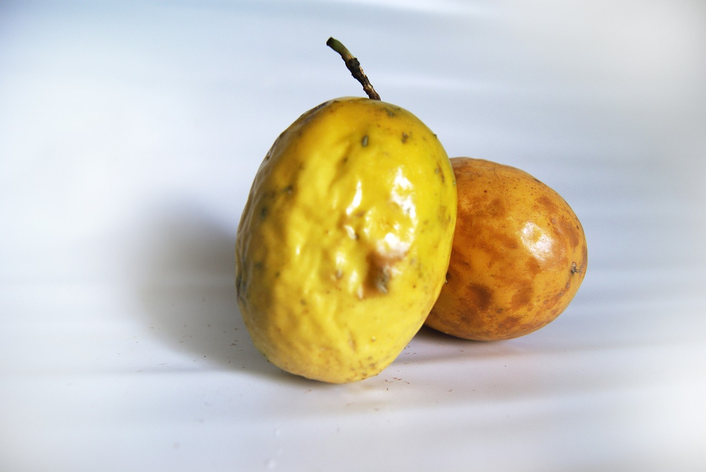

O maracujá é um fruto que tem muitos benefícios para a saúde, como acalmar a ansiedade o estresse ou a insônia, pois possui propriedades antioxidantes, sedativas e ansiolíticas.
Essa fruto é rico em flavonoides, vitamina A e vitamina C potássio e magnésio, além de fornecer boas quantidades de fibras, e por isso, ajuda a regular os níveis de açúcar no sangue, melhorar a saúde do coração e promover a perda de peso.
Existem diversos tipos desse fruto, como maracujá roxo, maracujá do mato, maracujá doce ou maracujá azedo, que se diferenciam quanto a cor da casca, da polpa e no sabor mais adocicado ou azedo. As folhas, as flores, a polpa e as sementes do maracujá podem ser usados no preparo de sucos, molhos e chás. Já a casca pode ser usada como farinha, adicionada a alimentos.
Os principais benefícios do Maracujá
- 1. Diminuir ansiedade e estresse: O maracujá diminui os sintomas de ansiedade e estresse, pois é composto por flavonoides, como kaempferol e quercetina, que atuam diretamente no sistema nervoso, acalmando e promovendo o relaxamento.
- 2. Controlar e prevenir a diabetes: A polpa e as folhas do maracujá são ricos em antioxidantes, como vitamina C, betacarotenos, flavonoides e antocianinas que protegem as células responsáveis pela produção de insulina, ajudando no controle dos níveis de glicose no sangue e na prevenção da diabetes. Além disso, a casca do fruto é rico em pectina, um tipo de fibra que ajuda na liberação lenta dos carboidratos dos alimentos no organismo, equilibrando os níveis de glicose no sangue, controlando a diabetes.
- 3. Combater a insônia: Tanto as folhas, quanto as flores e a polpa do maracujá têm propriedades sedativas leves do sistema nervoso central, ajudando a combater a insônia e promovendo um sono mais tranquilo e revigorante.
- 4. Ajudar na perda de peso: A casca do maracujá é rica em fibras, como a pectina, que ajudam a diminuir a velocidade de digestão dos alimentos, diminuindo a fome e facilitando a perda de peso. Conheça outros alimentos ricos em fibra que promovem a perda de peso. Além disso, o maracujá também tem um efeito relaxante, o que pode ajudar a combater a compulsão alimentar, ajudando na perda de peso.
- 5. Prevenir doenças cardiovasculares: Por conter altas quantidades de antioxidantes, como flavonoides e antocianinas, o maracujá melhora a saúde das artérias e impede a formação de radicais livres, favorecendo a prevenção de doenças crônicas, como aterosclerose, infarto, pressão alta e derrame. A polpa e a casca do maracujá também são ricos em fibras que promovem a redução da absorção de gordura dos alimentos no intestino, regulando os níveis de colesterol e triglicerídeos no sangue.
- 6. Controlar a pressão arterial: O maracujá tem baixo teor de sódio e é rico em potássio e magnésio, minerais importantes que ajudam a aumentar o relaxamento dos vasos sanguíneos e a eliminar o excesso de sódio do corpo através da urina. Desta forma o maracujá promove a redução da pressão arterial, sendo um alimento saudável para pessoas que têm pressão alta.
- 7. Combater a prisão de ventre: O maracujá combate a prisão de ventre, pois tem ótimas quantidades de fibras, importantes para facilitar a formação do bolo fecal e ajudar na eliminação das fezes. Além disso, a pectina da casca do maracujá serve de alimento para as bactérias benéficas da flora intestinal, favorecendo o bom funcionamento do intestino.
- 8. Prevenir flacidez e envelhecimento precoce: O maracujá é rico em antioxidantes, como vitamina C, vitamina A e antocianinas que protegem as células da pele contra os radicais livres, prevenindo a flacidez e o envelhecimento precoce. Além disso, a polpa e a casca do fruto têm ótimas quantidades de fibras que ajudam no controle da glicemia e impedem a formação de produtos de glicação avançada (AGEs), diminuindo a inflamação e prevenindo a flacidez da pele.
- 9. Aumentar a energia: O maracujá é rico em carboidratos, minerais e vitaminas, sendo uma fruta que ajuda a melhorar a energia e a disposição mental e física, reduzindo o cansaço geral do dia a dia, sendo um alimento fácil de consumir no café da manhã, lanche ou entre refeições.
- 10. Prevenir o desenvolvimento do câncer: Por ser rico em antioxidantes, como vitamina C, betacarotenos, flavonoides e antocianinas, o maracujá possui propriedades anticancerígenas, pois ajuda a reduzir o acúmulo de radicais livres no organismo que danificam as células, prevenindo o desenvolvimento do câncer.
Tabela de informação nutricional
A tabela a seguir traz a composição nutricional de 100 g da polpa de Maracujá
| Componentes | 100g de Maracujá |
| Energia | 68,4 calorias |
| Gorduras | 2,1 g |
| Proteínas | 2,0 g |
| Carboidratos | 12,3 g |
| Fibras | 3,3 g |
| Vitamina A | 125 mcg |
| Vitamina C | 23 mg |
| Caroteno | 750 mcg |
| Magnésio | 29 mg |
| Fósforo | 64 mg |
| Potássio | 200 mg |
| Vitamina B2 | 0,02 mcg |